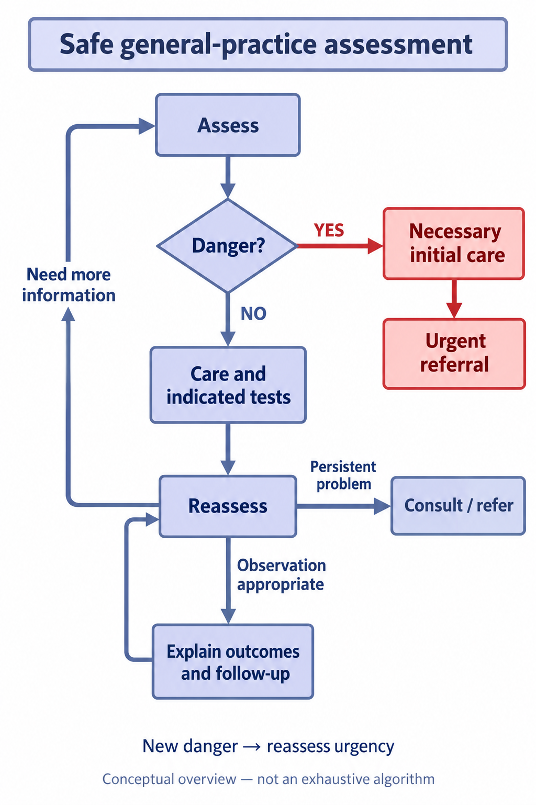

教材讲义
一、从症状形成初步诊断
倾听主诉 → 明确症状性质和病程 → 判断紧急危险 → 结合个人背景列出主要鉴别 → 定向问诊和查体 → 按需要检查、会诊或转诊。 教材一般先列2～5个主要鉴别方向，目的在于聚焦临床问题，不是限制所有复杂病例只能有这一数量。 基本入手方式有从症状、从疾病、从系统入手，其中症状入手最常用。刻画、归缩、菱形诊断及诊断三联征等用于组织线索。 教材三联征示例：发热—头痛—颈项强直提示脑膜炎；腹痛—寒战高热—黄疸提示急性胆管炎；腹痛—停经—异常阴道出血提示异位妊娠。典型组合是识别线索，未出现完整组合不能反向作为排除依据。
二、验证假设
针对不同假设补充病史和体检，合理选择辅助检查，动态观察病情，按条件评价试验性处理及其反应，必要时会诊和转诊。考虑疾病概率和检查性能，随新证据调整判断；不能把初诊猜测固定为不可修改的结论。
指南补充 · 出处
配图出处与待核资料
复习随记
教材讲义
三、莫塔安全诊断的五个问题
- 这种症状或体征的常见疾病有哪些？
- 有什么不能忽略的严重疾病？
- 有什么容易遗漏的病因？
- 是否存在潜在而常被掩盖的疾病或问题？
- 患者试图告诉我什么，是否有未表达的担忧、期望或就医原因？ 常见病优先并不抵消严重疾病优先排查。关注患者背景，也不能把所有不明症状都归于心理因素。
四、诊疗流程中的决策点
- 从接触患者开始判断是否有急、危、重症；有危险时立即采取必要处置并组织适宜转诊。
- 非急重者结合临床评估决定处理及是否进一步检查。
- 处理后再评价症状、体征和功能；出现新危险信息时重新分流。
- 未改善、不能明确或超出本机构能力时，重新评估并考虑专科会诊或转诊。
- 决定继续观察者应告知可能变化、复诊安排和再就诊指征；连续观察不能拖延必要诊治。 流程图每个分支都要求临床判断，不是按图机械等待。
指南补充 · 出处
配图 · 教材对照（2026-10-25）
接诊分流与连续再评价

接诊评估先判断急危重；有危险时按需初步处置并紧急转诊，非急重者诊疗及按需检查后再评价。需要更多信息时回到评估；问题持续时会诊或转诊；适宜留观时告知可能结果并连续观察、再评价。新危险随时重新分流。此图为教材工作链的概念概览，非穷尽性临床算法。
自制概念流程图，AI辅助绘制；非教材原图或个人诊疗记录。
出处：全科安全诊疗分流与再评价（自制示意）；本项目自制示意图（AI辅助）；未复制原书图。
配图出处与待核资料
复习随记
教材讲义
五、危险问题标识法
危险问题标识法（red-flag approach）是根据主诉、病史、症状、体征等线索，识别可能进行性或危及生命问题的方法。先判断轻重缓急，再推进病因诊断。 教材以乏力为例列出：
| 需警惕的问题 | 对应线索举例 |
|---|---|
| 重度抑郁 | 自杀念头、社会活动减少与退缩 |
| 戒断综合征 | 长期酒精或精神活性物质使用，近期突然停用 |
| 重症感染 | 明显高热、脑膜刺激或休克等 |
| 严重心衰 | 端坐呼吸及相关心脏体征 |
| 糖尿病控制不良 | 烦渴、多尿、体重下降 |
| 以上是提示方向，不是完整病例定义，也不是必须同时满足的清单。鉴别诊断须结合病史、查体和具体风险；有警讯时优先采取相应检查和处置。 |
指南补充 · 出处
复习随记